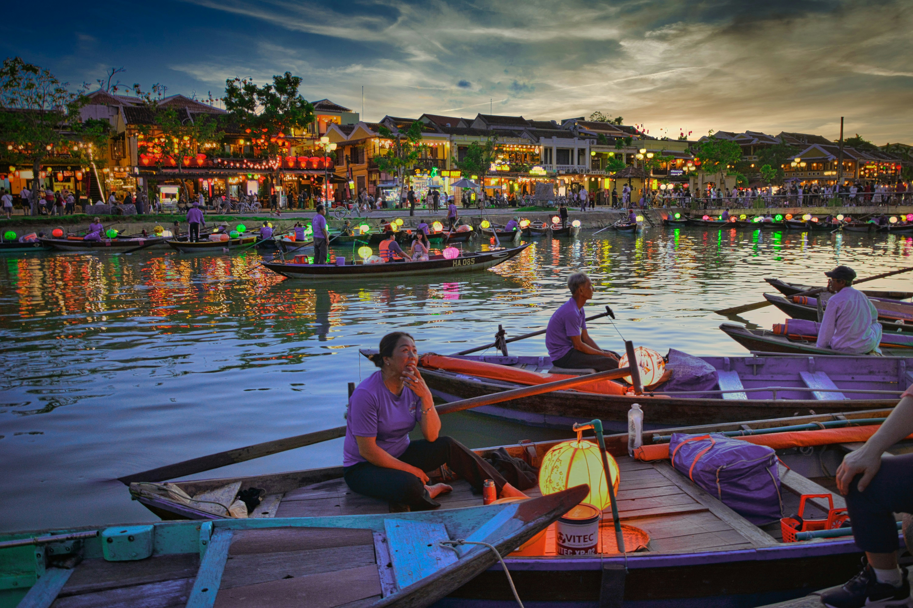

Lying between Thailand and Vietnam, Cambodia is becoming one of ‘the’ travel destinations in Asia. After the Khmer Rouge regime and capture of Pol Pot, Cambodia attracts millions of international tourists every year. The perfect Cambodia tour lets you experience it's incredible sites, great beaches, heartwarming culture, fascinating history and the wonderful people here. The ideal 4 night 5 days Cambodia family package is perfect for a relaxing yet adventurous vacation away from the hustle of city life. One can easily book Cambodia tour packages from India to enjoy this refreshing holiday. The first day of your Cambodia tour will let you wander around the city of Phnom Penh as you desire. The second day brings a small sightseeing tour with a visit to the major tourist attractions here. As your time in Siem Reap on the third day, spend a cheerful time with your family at leisure. On the fourth day, explore the ancient ruins of Angkor and visit the magnificent Temples right between the jungles. These 5 days in Cambodia will leave you refreshed with a loads of information about its history and culture. Book your 4 Nights 5 days Cambodia family packages from TravelTriangle today and avail heavy!
Begin a relaxing vacation on your Cambodia Tour! As you arrive at the airport in Phnom Penh, you will be greeted by our agents representative and tour guide. The driver will take you to your hotel for check in. The first day of your Cambodia travel itinerary leaves you at leisure. Stay in for a relaxing afternoon and evening or go out strolling around the city. Return to your hotel for a comfortable overnight stay.
Journey through Cambodia's history today! After a hearty meal at the hotel, the second day of this 4 night 5 days Cambodia family package takes you through the terrifying history of Cambodia. Visit the historical places around town including the Royal Palace, the magnificent Silver Pagoda, the informative National Museum, Tuol Sleng Museum, and the killing fields of Choeung Ek. Spend the evening at the Russian market called Psar Toul Tom Pong to shop for souvenirs and other unique products. Return to your hotel after this tiring day for a cozy overnight stay. Marvel the majestic Independence Monument in Cambodia
Spend a relaxing third day in Siem Reap! A wholesome breakfast at the hotel will be followed by checking out and transfer to the bus station. Arrive in Siem Reap via bus and get transferred to your hotel. Check in and spend the rest of the day at leisure. The third day of your Cambodia tour itinerary allows you to engage in sightseeing in Siem Reap on your own or spend the day relaxing with your loved ones. You can also enjoy an authentic dinner at one of the local restaurants. Return to your hotel and spend a cozy night. Distance from Phnom Penh to Siem Reap: 316 kms Travel time: 5 hours
A sightseeing tour of the historical Angkor! Right after a delicious breakfast, visit the ancient Angkor area, UNESCO World Heritage site. The fourth day of your Cambodia itinerary lets you explore the ancient ruins of Angkor, the stone carved Colossal human faces, the various temples including the Ta Prohm, embraced by gigantic Creepers. Afterwards, visit the Angkor Wat, a 12th century architectural beauty, and take a walk around this magnificent edifice. After this historical tour, return to your hotel for a snug overnight stay.